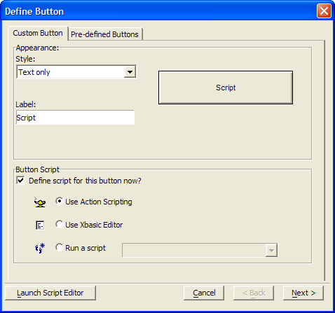
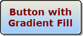

Placing a Button on a Form
When you put a new button on a form, Alpha Anywhere assumes that you first want to attach a script to its OnPush event. Alpha Anywhere lets you define the action for the button in one of three ways:
Select a pre-defined Action
Use the Action Scripting Editor
Use the Xbasic (Code) Editor
When creating Action Scripts for button events, you can specify that the button perform a single action, like opening a Form or printing a Report, or a sequence of steps. If you want a button that performs a single task, the easiest method is to select from a list of pre-defined actions.
To create an Action for a button on a Form:
If you do not see the Toolbox, select View > Toolbox.
To put a button on the form, select the Button Object tool
 on the Toolbox.
on the Toolbox.While holding down the left mouse button, draw a small rectangle on the form.
When you release the mouse button, the Define Button dialog box ( Button Genie ) appears.

You have two options at this point that are represented by different tabs.
((|#Using_a_Predefined_Button|Pre-defined Button))
If you choose to create a custom button, select a Style for the button. The options are:
- "Picture followed by text"
- "Picture only"
- "Picture over text"
- "Text followed by picture"
- "Text"
- "Text over picture"
If your selection in step 1 includes a picture, click Define Picture to display the <span class=Screen>Define Picture</span> dialog.
If your selection in step 2 includes text, optionally change the button label in the Label field.
If you do not want to define an action for the button:
Clear Define script for this button now?
Click OK.
If you do want to define an action for the button, make a selection from these three options:
Use Action Scripting
Use Xbasic Editor
Run a Script
If you selected "Run a Script":
Choose a script from the drop-down list box.
Click OK.
Otherwise, click Next > to begin defining the action for the script.
The Pre-Defined Buttons tab lists the actions available in the Form menus.
Select an action from the list.
Optionally, change its Style. The options are:
"Picture followed by text"
"Picture only"
"Picture over text"
"Text followed by picture"
"Text"
"Text over picture"
If your selection in step 2 includes a picture, click Define Picture to display the <span class=Screen>Define Picture</span> dialog.
If your selection in step 2 includes text, optionally change the button label in the Label field.
Click OK to save your inputs.
To create a button to run a saved operation:
Draw the button and define its label.
Select "Use Action Scripting".
Add a new action.
Continue with Run Saved Operation.

A sample button created in Alpha Anywhere Picture
{kind=link}
To display the Properties dialog for a button, right click on it and select Properties... .
To define the style of the button, display its Setup tab and make a selection from the Style list. The options are:
"Bitmap followed by text"
"Bitmap only"
"Bitmap over text"
"Text followed by bitmap"
"Text only"
"Text over bitmap"
To define the text of the button, display its Setup tab and enter the caption into the Label control.
To define the bitmap of the button, display its Setup tab, click Define button bitmaps..., and select the image from the Define Picture dialog.
To define the alignment of the button label, display its Alignment tab:
Optionally, select a Horizontal alignment
Optionally, select a Vertical alignment.
Optionally, disable Word wrap.
To adjust the border or fill styles of a button, display the Border tab.
To adjust the border properties of the button, refer to Defining Border Style and Color.
To adjust the shadow properties of the button, refer to Defining Shadows.
To adjust the fill properties of the button, refer to Defining Fill Style and Color.
To define the style of the button label, display its Font tab, and select the label's font, point size, attributes, and color.
To adjust the dimensions of a button, display its Dimensions tab, and set its Left and Top coordinates, and its Width and Height. You may change the units of measure on the <span class=Screen>Settings</span> dialog.
See Also
Using the Toolbox, Placing a Field on a Form, Pre-Defined Actions, Introduction to Action Scripting, Button Properties